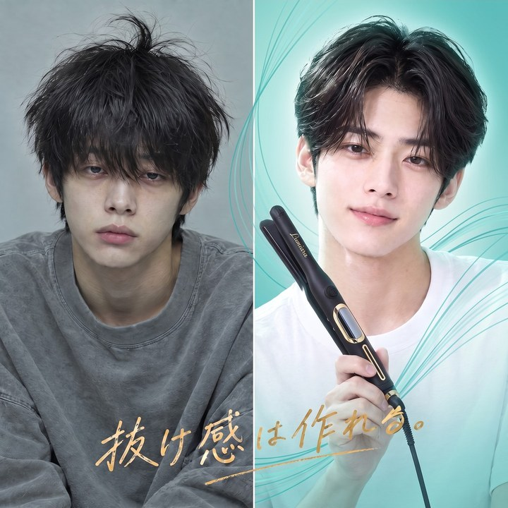
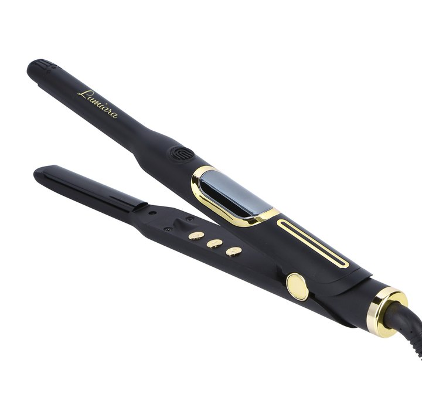

データの出典（タップで開く）
・女性の71.3%：株式会社PERCUT「男性の髪型に関する調査」（2022年8月・女性609名）。男性の見た目で特に気を遣ってほしい部分の1位が髪型・ヘアケア
・男性の身だしなみで大事なのは「髪」か「肌」か、7割が「髪」：株式会社ノーマリズム調べ（2026年8月・20〜50代女性100名）
・第一印象で顔を見る20代男性が、顔の中で最も気にするのは「髪型」57.2%：TesTee Lab「美容室・ヘアスタイルに関する調査」（2018年9月・20代男女1,039名）
・10・20代男性のヘアアイロン利用率 8〜9%（2021年）→30%超（2023年）：マイボイスコム「美容家電に関するアンケート調査」第4回（2021年11月・10,304名）／第5回（2023年11月・9,797名）
・15〜29歳の男性の半数以上（54%）がヘアアイロンを使ったことがある：株式会社SheepDog「ヘアアイロンに関するアンケート」（2023年9月・15〜29歳男性300名）
・重いアイロンは手が疲れやすい：MTG(ReFa)公式サイト「ヘアアイロンの選び方」コラム／手の疲労後は握力や動作の精密さが一時的に低下：Ergonomics誌掲載研究（2026年）


軽さも、狙って作った。
重い方が、高級に見えるのは分かっていました。それでも、軽さを選んだ理由があります。
重いアイロンほど、手は疲れやすく、挟む力が強くなりダメージにつながることがある
出典：MTG(ReFa)公式サイト「ヘアアイロンの選び方」コラム
手の疲労後は、握力や動作の精密さが一時的に低下することが確認されている
出典：Ergonomics誌掲載研究（2026年）
前髪や生え際は、皮膚が薄く、繊細な部分。疲れた手で扱う道具じゃ、危ない。
だから、軽さにはこだわりました。


運営者情報
| 運営会社 | 株式会社L-GM |
|---|---|
| 所在地 | 神奈川県横浜市都筑区茅ケ崎中央11-5 パスタビル305 |
| お問い合わせ | yokohama1227@l-gm266.info |
| ブランド名 | LUMIARA（ルミアラ） |
※本ページは発売前の先行登録のご案内です。現在、商品の販売は行っておりません。
プライバシーポリシー
株式会社L-GM（以下「当社」）は、LUMIARA メンズヘアアイロンの先行登録でお預かりする情報を、次のとおり取り扱います。
1. 取得する情報
- LINE公式アカウントの友だち追加により当社が確認できる情報（LINEの表示名など）
- アンケートでご回答いただいた内容（年代、髪の悩み、希望価格など）
2. 利用する目的
- 商品の企画・開発（価格・同梱物などの検討）
- 発売のご案内、発売日クーポンのご案内などのお知らせ
- お問い合わせへの対応
3. 第三者への提供
法令に基づく場合を除き、ご本人の同意なく第三者に提供することはありません。
4. 管理
取得した情報は、不正なアクセス・紛失・漏えいが起きないよう適切に管理します。
5. お知らせの停止
LINE公式アカウントをブロックすることで、いつでもお知らせを止めることができます。
6. お問い合わせ
株式会社L-GM yokohama1227@l-gm266.info
制定日：2026年9月27日
© 2026 LUMIARA / 株式会社L-GM